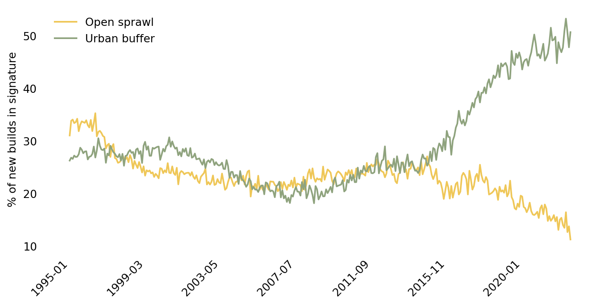
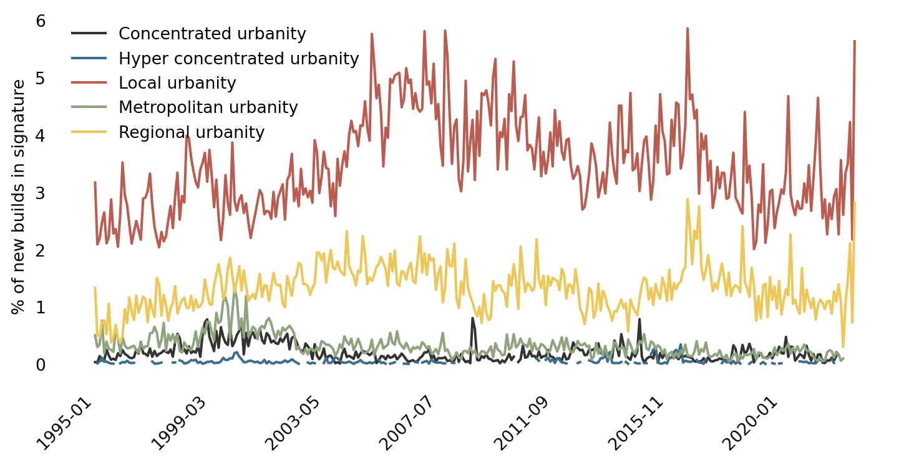

p = lr.plot( figsize=(9, 4), subplots=False, sharex=True, sharey=True, alpha=0.5)handles, labels = plt.gca().get_legend_handles_labels()order = pandas.Series(range(len(labels)), index=labels)[type_order[::-1]].tolist()plt.legend( [handles[idx] for idx in order],[labels[idx] for idx in order], bbox_to_anchor=(1,1), loc="upper left", frameon=False)p.set_frame_on(False)p.set_yticklabels([])p.set_yticks([])p.set_xlabel('')p.tick_params(bottom=False)p.set_xticklabels(p.get_xticklabels(), rotation =45, ha="right");
Land Registry new properties by signature type
Code
p = lr.T.div(lr.T.sum()).T.plot( figsize=(9, 4), subplots=False, sharex=True, sharey=True, alpha=0.5)handles, labels = plt.gca().get_legend_handles_labels()order = pandas.Series(range(len(labels)), index=labels)[type_order[::-1]].tolist()plt.legend( [handles[idx] for idx in order],[labels[idx] for idx in order], bbox_to_anchor=(1,1), loc="upper left", frameon=False)p.set_frame_on(False)p.set_yticklabels([])p.set_yticks([])p.set_xlabel('')p.tick_params(bottom=False)p.set_xticklabels(p.get_xticklabels(), rotation =45, ha="right");
Yearly proportion of Land Registry new properties by signature type
Code
p = ( lr.T.div(lr.T.sum()).T [['Open sprawl', 'Urban buffer']] .multiply(100) .plot.line( figsize=(9, 4), color=(ugg.HEX[4], ugg.HEX[3]) ))plt.legend(loc="upper left", frameon=False)p.set_frame_on(False)p.tick_params(left =False, bottom=False)p.set_ylabel('% of new builds in signature')p.set_xlabel('')p.set_xticklabels(p.get_xticklabels(), rotation =45, ha="right");

Yearly proportion of Land Registry new properties
Code
p = ( lr.T.div(lr.T.sum()).T [[i for i in lr.columns if ('urbanity'in i.lower())]] .multiply(100) .plot.line( figsize=(9, 4), color=ugg.HEX[:5], ))p.set_frame_on(False)p.tick_params(left =False, bottom=False)p.set_ylabel('% of new builds in signature')p.set_xlabel('')p.legend(frameon=False)p.set_xticklabels(p.get_xticklabels(), rotation =45, ha="right");

Yearly proportion of Land Registry new properties
Code
types = ( [i for i in lr.columns if'neighbourhoods'in i.lower()] + ['Gridded residential quarters'] + [i for i in lr.columns if'suburbia'in i.lower()])ps = ( lr.T.div(lr.T.sum()).T [types] .multiply(100) .iloc[:-1, :] .plot.line( figsize=(6, 4), color=ugg.HEX, subplots=True, rot=45 ))for p in ps: p.set_frame_on(False) p.tick_params(left =False, bottom=False) p.set_yticks([]) p.set_xlabel('') p.legend( loc="upper left", bbox_to_anchor=(1,1), frameon=False );
Yearly proportion of Land Registry new properties
References
Arribas-Bel, Daniel, and Martin Fleischmann. 2022. “Spatial Signatures - Understanding (Urban) Spaces Through Form and Function.”Habitat International 128: 102641. https://doi.org/https://doi.org/10.1016/j.habitatint.2022.102641.
Fleischmann, Martin, and Daniel Arribas-Bel. 2022. “Geographical Characterisation of British Urban Form and Function Using the Spatial Signatures Framework.”Scientific Data 9 (1): 1–15.